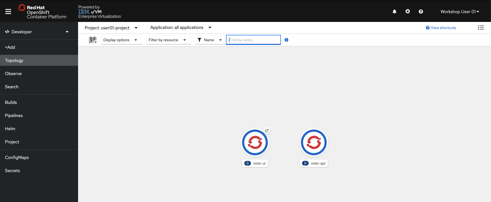
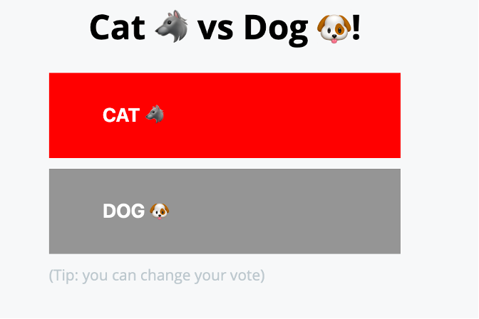

Accessing the Pipeline in a Browser¶
Your application is accessible via its route.
-
In the OpenShift console, navigate to the Topology page in the Developer Perspective and make sure you’re in your userNN-project.

You should see two Icons with solid blue bars indicating your application pods are running without error.
-
On the vote-ui icon, click the button in the top right corner to navigate to the application’s exposed route.

This will open a new browser tab for your frontend application UI.

-
Click the box for your desired option.
By casting your vote with the vote-ui frontend, you are invoking a REST API call and sending a POST request that is stored in the vote-api backend application.
You can see this POST request reflected in the vote-api Pod logs.
-
In your terminal session find the name of your vote-api Pod using the command:
oc get pods | grep RunningExample Output
user01@lab061:~/openshift-pipelines-s390x$ oc get pods | grep Running vote-api-6765569bfb-p2bhh 1/1 Running 0 65m vote-ui-6846f88f6f-rzzgt 1/1 Running 0 18m -
Copy the full name for your vote-api Pod and view its logs with the command:
oc logs pod/vote-api-XXXXXXXXXX-YYYYYImportant
Your randomly-generated Pod names will differ.
Example Output
user01@lab061:~/openshift-pipelines-s390x$ oc logs pod/vote-api-6765569bfb-p2bhh [GIN-debug] [WARNING] Creating an Engine instance with the Logger and Recovery middleware already attached. [GIN-debug] [WARNING] Running in "debug" mode. Switch to "release" mode in production. - using env: export GIN_MODE=release - using code: gin.SetMode(gin.ReleaseMode) [GIN-debug] GET /vote --> main.setupRouter.func1 (3 handlers) [GIN-debug] POST /vote --> main.setupRouter.func2 (3 handlers) [GIN-debug] Listening and serving HTTP on :9000 [GIN] 2021/03/22 - 16:18:18 | 200 | 179.658µs | 10.131.1.157 | POST /vote [GIN] 2021/03/22 - 16:18:48 | 200 | 107.379µs | 10.131.1.157 | POST /voteYou can see your POST requests at the
/voteendpoint at the bottom, and more detail is stored in NFS by the PersistentVolumeClaim you created earlier.
In this lab, you have:
- Created Tasks that have specific responsibilities in the building and deploying of a containerized application onto an OpenShift on IBM Z cluster
- Created a Pipeline that combines these Tasks to one end-to-end process
- Ran the Pipeline twice -- once from the command line, and once from the OpenShift console -- to create a backend and a frontend application.
- Used the created applications to invoke a REST API call that is stored persistently in NFS storage.